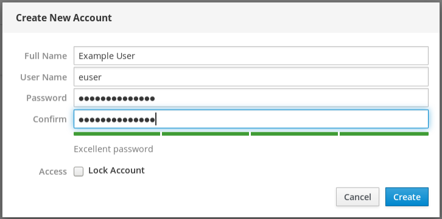
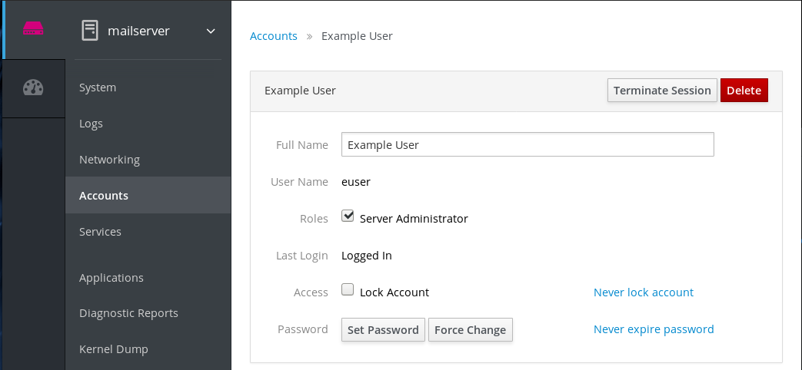
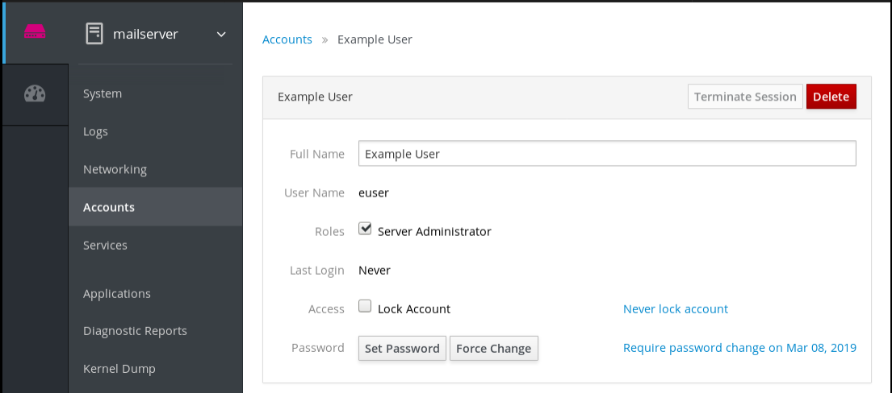

The RHEL 8 web console offers an interface for adding, editing, and removing system user accounts. After reading this section, you will know:
- From where the existing accounts come from.
- How to add new accounts.
- How to set password expiration.
- How and when to terminate user sessions.
- Being logged into the RHEL 8 web console with an account that has administrator permissions assigned. For details, see Logging in to the RHEL web console.
With user accounts displayed in the RHEL 8 web console you can:
- Authenticate users when accessing the system.
- Set them access rights to the system.
The RHEL 8 web console displays all user accounts located in the system. Therefore, you can see at least one user account just after the first login to the web console.
Ones you are logged in to the RHEL 8 web console, you can:
- Create new users accounts.
- Change their parameters.
- Lock accounts.
- Terminate the user session.
You can find the account management in the Accounts settings.

The following describes adding system user accounts in the RHEL 8 web console and setting administration rights to the accounts.
Procedure
- Log in to the RHEL web console.
- Click Accounts.
- Click Create New Account.
In the Full Name field, enter the full name of the user.
The RHEL web console automatically suggests a user name from the full name and fills it in the User Name field. If you do not want to use the original naming convention consisting of the first letter of the first name and the whole surname, update the suggestion.
In the Password/Confirm fields, enter the password and retype it for verification that your password is correct. The color bar placed below the fields shows you security level of the entered password, which does not allow you to create a user with a weak password.

- Click Create to save the settings and close the dialog box.
- Select the newly created account.
- Select Server Administrator in the Roles item.

Now you can see the new account in the Accounts settings and you can use the credentials to connect to the system.
By default, user accounts have set passwords to never expire. To enforce password expiration, as administrator, set system passwords to expire after a defined number of days.
When the password expires, the next login attempt will prompt for a password change.
Procedure
- Log in to the RHEL 8 web console interface.
- Click Accounts.
- Select the user account for which to enforce password expiration.
- In the user account settings, click Never expire password.
In the Password Expiration dialog box, select Require password change every … days and enter a positive whole number representing the number of days when the password expires.

- Click Change.
To verify the settings, open the account settings. The RHEL 8 web console displays a link with the date of expiration.

A user creates user sessions when logging into the system. Terminating user sessions means to log the user out from the system.
It can be helpful if you need to perform administrative tasks sensitive to configuration changes, for example, system upgrades.
In each user account in the RHEL 8 web console, you can terminate all sessions for the account except for the web console session you are currently using. This prevents you from cutting yourself off the system.
Procedure
- Log in to the RHEL 8 web console.
- Click Accounts.
- Click the user account for which you want to terminate the session.
Click the Terminate Session button.
If the Terminate Session button is inactive, the user is not logged in the system.
The RHEL web console terminates the sessions.